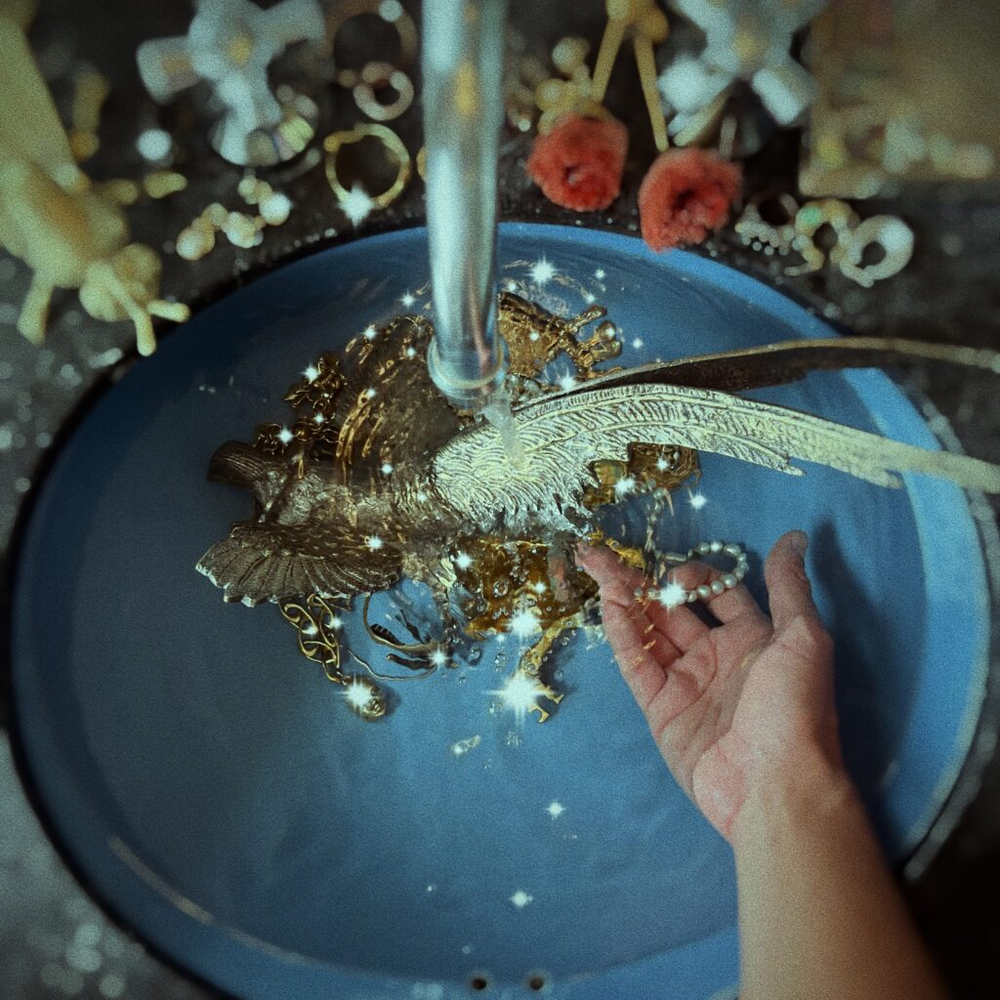
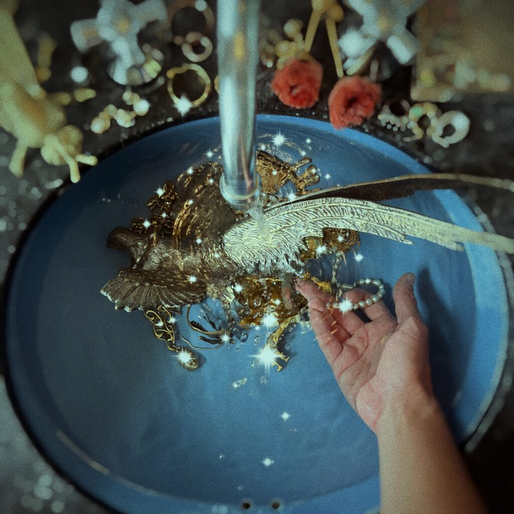

Some Artists That You Probably Don't Know But You Definitely Should
Discovering hidden gems in the world of music is always a thrilling journey, and today, we're excited to introduce you to three exceptionally talented but relatively unknown artists who are making waves with their unique sounds. While they may not have hit the mainstream charts just yet, their music is nothing short of extraordinary. Get ready to immerse yourself in the captivating melodies of Accusative, experience the soulful storytelling of Oh'laville, and groove to the infectious rhythms of Jose Alzate. These artists may be flying under the radar for now, but I believe they're poised for greatness.
Jose Alzate
Jose Alzate just released his debut EP "918282816". This young artist's compositions offer a unique departure from convention, delving into experimental soundscapes that invite listeners to traverse uncharted musical territory. Each track on this EP presents an abstract and immersive sonic experience, challenging conventional norms and pushing the boundaries of musical expression. Despite its experimental nature, this EP manages to strike a balance between audacity and emotional resonance. Jose Alzate crafts a hypnotic auditory landscape that may appeal to those seeking something distinct and thought-provoking. Whether you're an aficionado of experimental music or simply in search of something new, Jose Alzate's debut EP is worth exploring. It marks the beginning of what promises to be an intriguing artistic journey, prompting listeners to open their ears to fresh possibilities in the world of music.
告五人
告五人 is a popular Chinese boy band. They gained significant recognition and popularity in China, particularly through their participation in the Chinese reality TV show "The Coming One." The group is known for its youthful energy, catchy songs, and vibrant performances. 告五人 had released several singles and albums, and they had a growing fan base in China. I really recommend you the album Somewhere in time, I love you.
Oh'laville
 

Oh'laville is an alternative rock and pop rock band originally from Bogotá, Colombia. The band is made up of four members: Mateo Paris on lead vocals and guitar, Andrés Toro on guitar and second vocals, Andrés Sierra on bass and also second vocals, and Luis M Lizarralde on drums. Their music is characterized by its rock melodies, folk music mixed with electronics and more modern elements, as well as by the fusion of different influences, from the most classic pop to alternative rock and electronic music. If you like to listen to music in spanish sometimes this band will blow your mind with their lyrics.